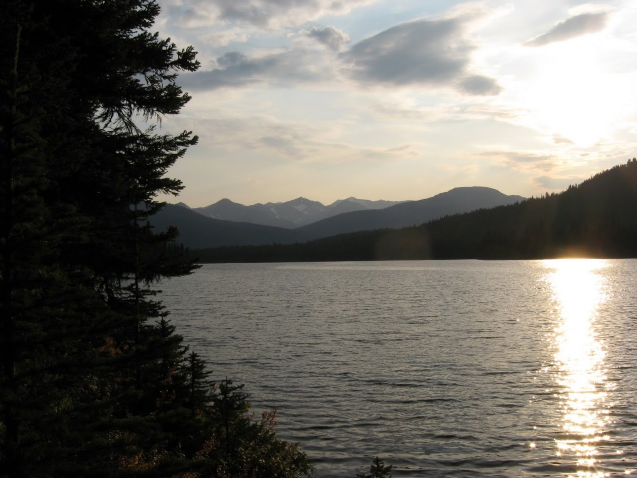

Welcome! I am a computer scientist trained in law. I want to help demystify the law and give us more confidence in the outcomes of the legal system and government decision-making. I am interested in the many overlaps of law and technology, especially algorithmic decision-making and copyright.
In law school, I spent a term at the Indigenous Community Legal Clinic, was Senior Editor for the Canadian Journal of Family Law, and convened a reading group on algorithms and the rule of law. After, I clerked at the Court of Appeal for British Columbia and the Supreme Court of Canada.
As a computer scientist, I’ve focused on visual object recognition, machine learning, and applications of deep neural networks. I stay up to date with recent publications and have continued to review for ICLR, ICML, and NeurIPS.
All of my work is connected to the relationships that I’ve been part of over the years: family, friends, instructors, supervisors and mentors, students, and the places that I’ve lived. I am a settler born in Winnipeg, Treaty 1 Territory, traditional territory of the Anishinaabe, Cree, Oji-Cree, and Dakota Peoples, and the homeland of the Métis Nation. I now live in Vancouver, which overlaps with the traditional, ancestral, and unceded territories of the Musqueam, Squamish and Tsleil-Waututh.

Recent updates
- Avoid leaky links: don’t reveal your research (posted July 13, 2025)
- Development plans, zoning, and public hearings in Vancouver (updated November 1, 2023)
- Consenting to reverse under s. 70 of the Supreme Court Act (updated October 3, 2023)
I used to have a tinyletter that I would use to email occasional updates, but it was shut down in 2024. I’m considering alternatives.
The views expressed on this blog are my own and do not represent those of the Department of Justice or the Government of Canada.
Here’s where you can find me elsewhere online:

Selected publications
Sancho McCann, “Discretion in the Automated Administrative State” (2023) 36:1 Can JL & Jur 171.
Sancho McCann, “Copyright Throughout a Creative AI Pipeline” (2021) 19 Can J Law & Tech 109.
Sancho McCann, “Finding Harmony: Law Society of British Columbia v Trinity Western University”, Case Comment, (2019) 28 Dalhousie Journal of Legal Studies 95.
Sancho McCann, Object classification and localization using spatially-localized features (PhD Dissertation, University of British Columbia, 2014) [unpublished].
Sancho McCann & David G Lowe, “Spatially-local coding for object recognition” in 11th Asian Conference on Computer Vision (Springer, 2012) 204.
Sancho McCann & David G Lowe, “Local naive Bayes nearest neighbor for image classification” in Computer Vision and Pattern Recognition (IEEE, 2012) 3650.
Sancho McCann, “Atmospheric Sounding Visualization” (course report, Information Visualization, Department of Computer Science, University of British Columbia, 2006) [unpublished].
A more complete list is at my Google Scholar profile.
Notes
1. ↑ PhD (Computer Science), 2014, University of British Columbia; JD, 2021, Peter A. Allard School of Law.
2. ↑ Learn more about the land where you live at native-land.ca.